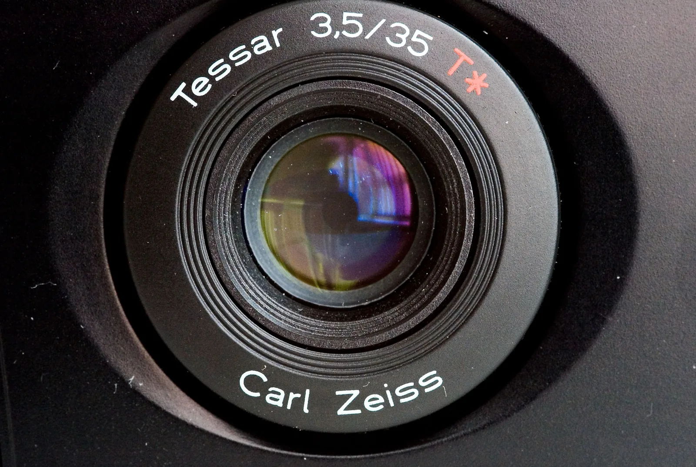
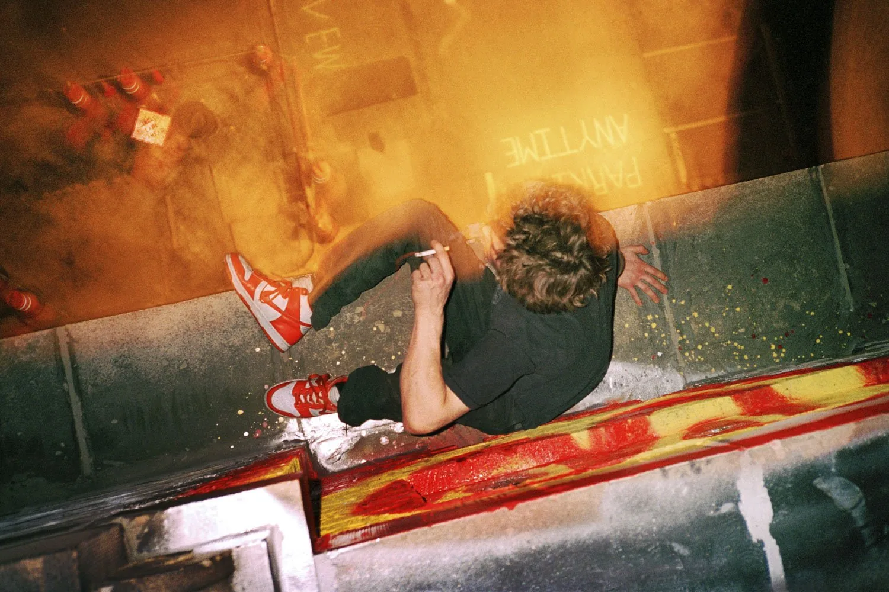
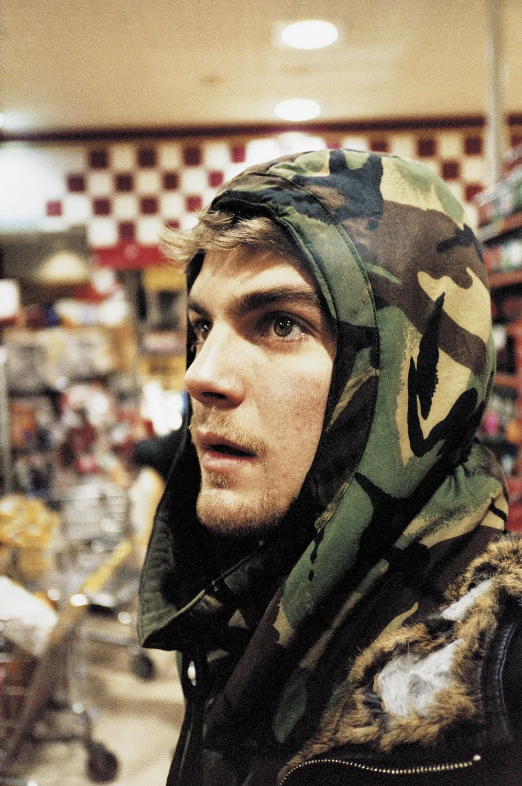
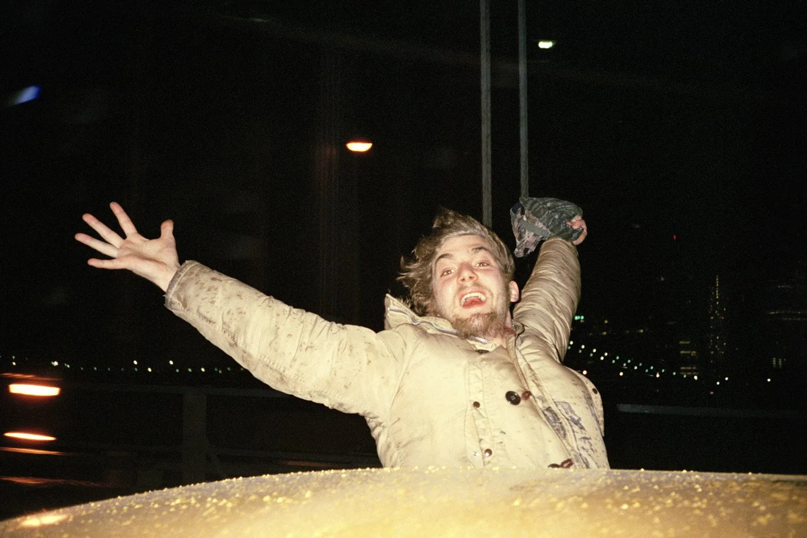
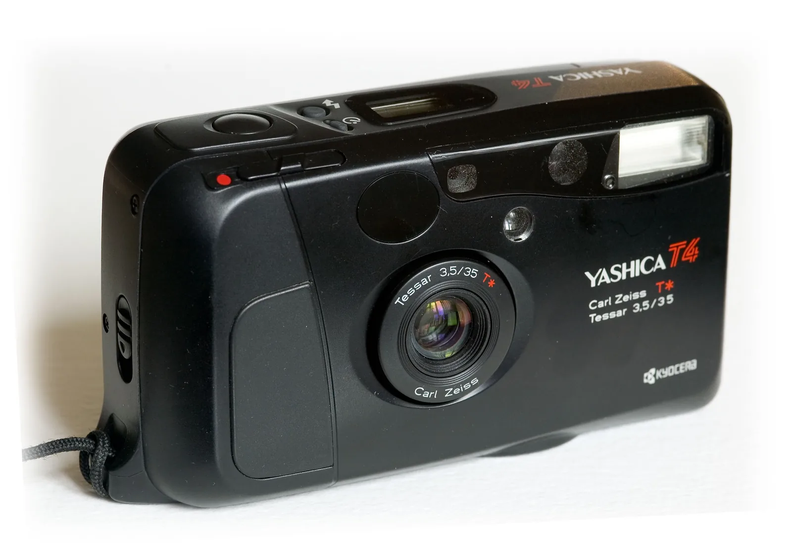
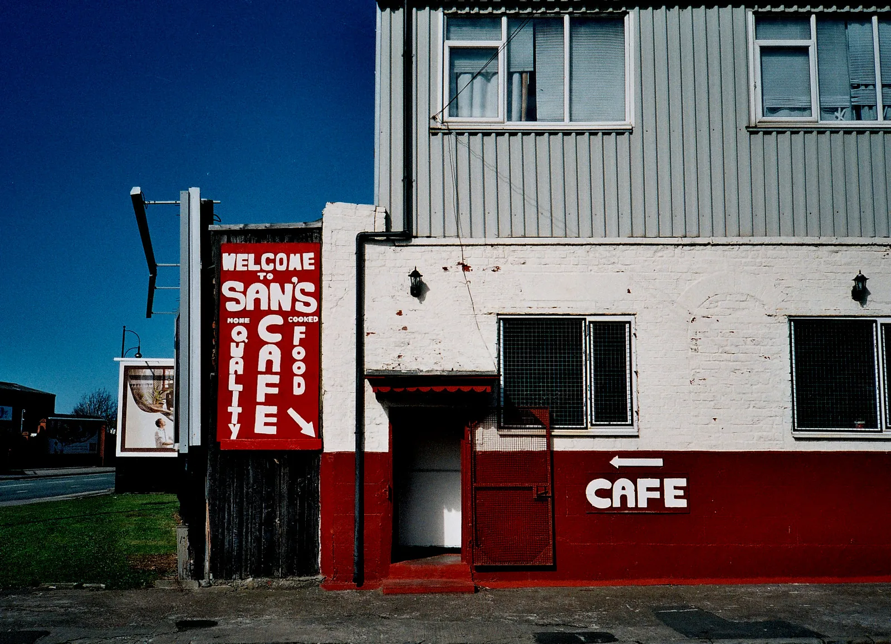
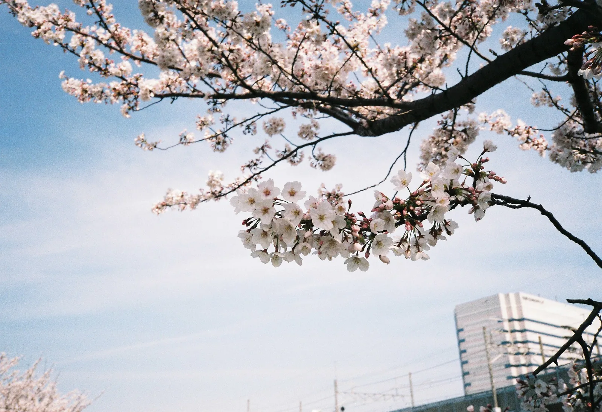
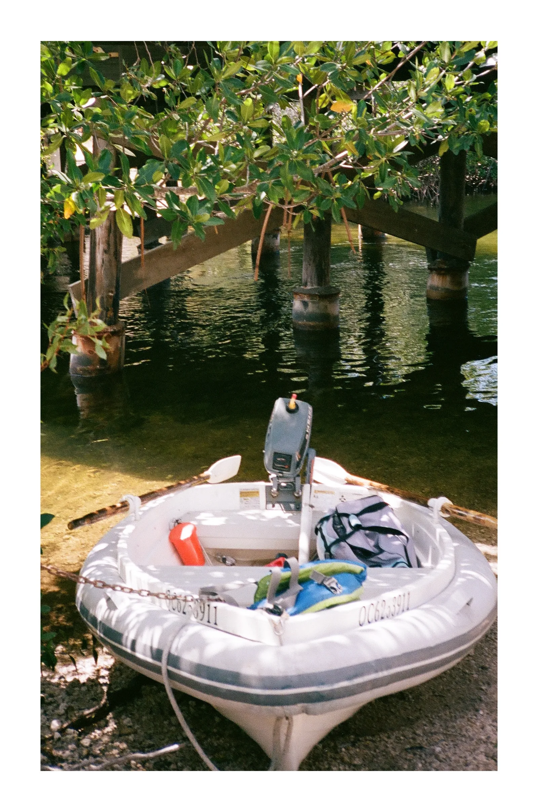
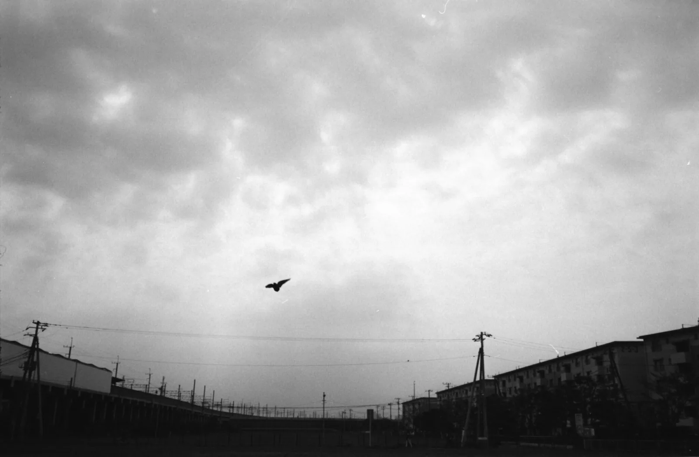

1999년부터 2003년까지, 뉴욕의 한 젊은 사진가는 거의 매일 밤 주머니에 필름 열 롤과 작은 카메라 하나를 넣고 나갔다. 라이언 맥긴리다. 그가 휘트니 미술관 개인전까지 간 사진 대부분이 그 카메라에서 나왔다. 야시카 T4 다.
교세라와 칼 자이스가 만든 똑딱이
야시카는 원래 일본의 카메라 회사다. 1983년 경영이 기운 야시카를 교세라가 사들였고, 교세라는 칼 자이스와 손잡고 콘탁스 브랜드도 함께 운영했다. T 시리즈는 그 협력에서 나온 자동 카메라다. T4 는 1990년대 초에 나왔다. 출시 연도는 자료에 따라 1990년과 1992년으로 갈린다.
T4 의 핵심은 렌즈다. 칼 자이스 테사(Tessar) 35mm f/3.5, 3군 4매 구성에 멀티코팅을 입혔다. 테사는 칼 자이스가 오래 써 온 고전적인 렌즈 설계의 이름이다. 화면 가운데가 날카롭고 대비가 또렷해, 작은 카메라답지 않은 결과가 나온다는 평이 많다.

무엇이 되고 무엇이 안 되나
쓰는 법은 간단하다. 전원을 켜고, 구도를 잡고, 셔터를 누른다. 초점과 노출은 카메라가 정한다. 셔터 속도는 1초부터 1/700초까지 카메라가 알아서 고르고, 가장 가까이 찍을 수 있는 거리는 35cm 다. 필름 감도는 DX 코드로 ISO 50 부터 3200 까지 읽는다. DX 코드가 없거나 범위를 벗어난 필름은 ISO 100 으로 맞춘다. 배터리는 CR123A 한 알을 쓰고, 무게는 170g 남짓이다.
뒤이어 나온 T4 Super(해외에서는 T5 라고도 부른다)는 두 가지를 더했다. 생활 방수, 그리고 카메라 윗면에 달린 작은 「슈퍼 스코프」 파인더다. 허리 높이에서 내려다보며 구도를 잡을 수 있어, 사람들 눈높이 아래에서 몰래 찍기 좋았다.
맥긴리가 이 카메라를 고른 이유도 결국 크기였다. 그는 스케이트보드 잡지 『Big Brother』에서 사진가 얼 파커가 T4 를 추켜세운 글을 보고 샀다고 했다. 주머니에 들어갔고, 그래서 매일 밤 들고 나갈 수 있었다. 바의 형광등 아래에서 ISO 1600 필름으로 찍었고, 셀프타이머로 자기 자신도 찍었다. 물이 튀는 자리에서도 꺼냈다고 한다.
아래는 맥긴리가 T4 를 쓰던 시기에 찍은 초기작 세 점이다. 작품명과 연도는 작가의 공식 아카이브에서 확인했다.




왜 지금 이렇게 비쌀까
T4 는 한때 흔한 중고 카메라였다. 똑딱이 한 대가 어떻게 이렇게 비싸졌을까? 2025년 해외 리뷰들은 상태 좋은 T4 의 시세를 500~600달러로 적는다. 렌즈는 여전히 좋다는 데 다들 동의한다. 다만 그 값은 성능보다 유명 사진가들이 쓴 카메라라는 이야기와 SNS 의 유행이 만든 몫이 크다는 평이 많다.
그래서 지금 T4 를 산다면 몇 가지를 꼭 본다. 똑딱이는 수리가 어렵다. 전원이 켜지는지, 렌즈 덮개가 제대로 열고 닫히는지, 플래시가 터지는지, 액정 표시가 살아 있는지 확인한다. 같은 값이면 비슷한 시기의 다른 단렌즈 똑딱이를 함께 견주어 보는 것도 방법이다.
결국 T4 가 남긴 것은 카메라 자체보다 쓰는 방식일지 모른다. 늘 주머니에 넣고 다닐 수 있을 만큼 작고, 꺼내자마자 찍을 수 있는 카메라. 맥긴리의 초기 사진이 지금 봐도 생생한 이유도 거기에 있다.
T4 로 찍은 사진
설명이나 태그에 T4 계열 기종이 명시되고 공개 라이선스로 풀린 사진 중에서 골랐다. 가까운 꽃의 세부와 거리의 진한 색, 흑백의 계조를 볼 수 있다.




독자들이 T4 로 찍은 사진
Reader's Roll 에 카메라를 야시카 T4 로 적어 올린 사진이다. 누르면 그 작가의 사진을 모아 볼 수 있다.
정보
- 카메라 야시카 T4 (교세라 제조), 1990년대 초 출시. 후속 T4 Super(T5)
- 렌즈 칼 자이스 테사 35mm f/3.5, 3군 4매, 멀티코팅
- 셔터·초점 1초 ~ 1/700초 자동, 자동초점, 최단 거리 0.35m
- 필름·전원 35mm(135) 필름, DX ISO 50 ~ 3200, CR123A 배터리